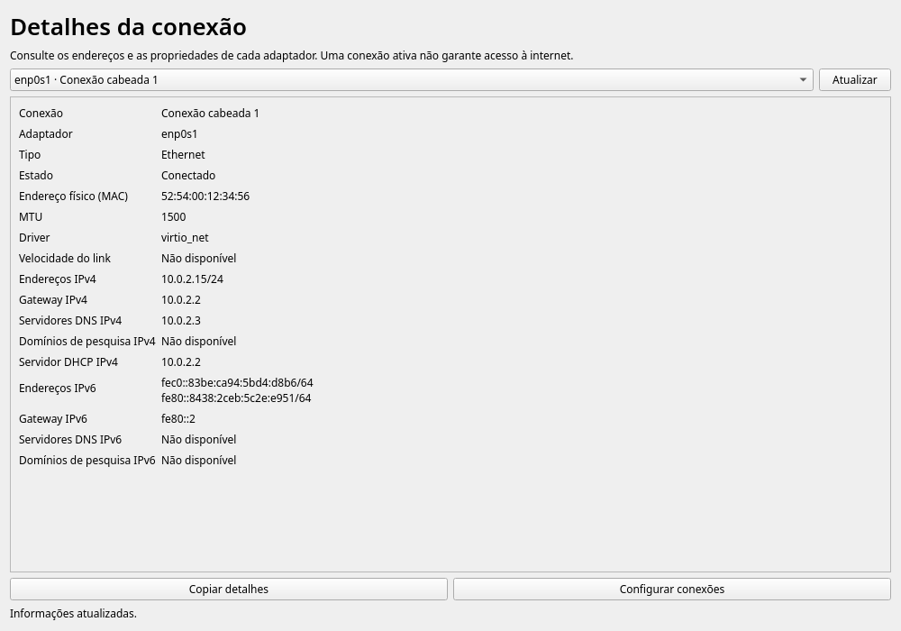

Use o ícone de rede da barra de tarefas para escolher uma rede Wi-Fi ou uma VPN já configurada. No Iniciar, abra Conexões e adaptadores para administrar a conexão ou Detalhes da conexão para consultar seu estado.
Em Detalhes da conexão, selecione o adaptador e use Diagnóstico de rede para verificar a conexão, o gateway, o DNS e o acesso à internet. Se a rede exigir autenticação, use Abrir portal de autenticação.
